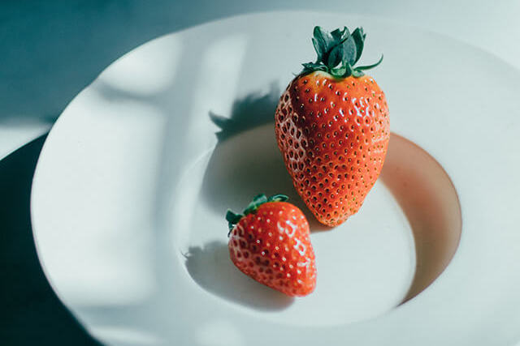
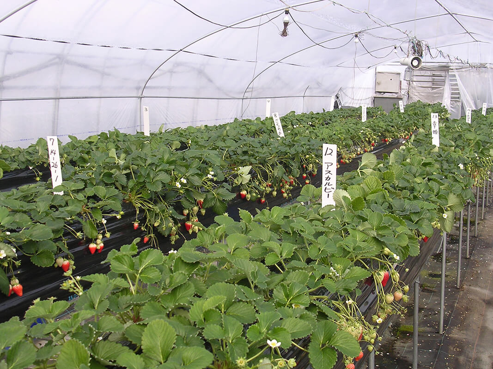

Префектура Нара · фермы префектуры · еда
«Тамахимэ»: клубника из Нары размером с куриное яйцо

Ягоды «Тамахимэ» бывают тяжелее 90 граммов, примерно как куриное яйцо. Этот сорт вывели в префектуре Нара, и за каждой такой ягодой стоят годы терпеливой селекции.
Сорта
Клубника как местная еда
Клубнику в Японии любят все, от детей до стариков: она яркая и красивая, её не нужно чистить, а во рту сладость сразу встречается с лёгкой кислинкой. По данным Министерства сельского хозяйства, японцы съедают больше свежей клубники, чем жители любой другой страны, а сортов здесь около 300.
Новые сорта появляются один за другим, и выводят их не частные компании, а научные центры префектур. Причина простая: достаточно получить один куст, и дальше его можно размножать клонами без конца. Поэтому селекцией занимаются государство и префектуры.

«По закону о семенах и посадочном материале исключительное право на сорт охраняется от 20 до 25 лет. Клубники, которую разрешено выращивать за пределами своей префектуры, мало, и сейчас каждая префектура выводит собственные сорта»
глава отдела селекции центра
Выходит, что сорт клубники в Японии стал почти местной едой, которую пробуют именно там, где её вывели.
В префектуре Нара селекция идёт очень активно. Этот же специалист участвовал в создании сорта «Асука руби», зарегистрированного в 2000 году, и «Котока», зарегистрированного в 2011-м. У «Котока» особенно яркий вкус, кондитерские её очень ценят, и сегодня это известная марка клубники.
Новый сорт
Ягода размером с яйцо
Следующим стал сорт «Тамахимэ»: заявку на его регистрацию опубликовали в декабре 2019 года. О новой ягоде рассказывает селекционер, которая работала над ней и позже перешла в отдел маркетинга сельскохозяйственного департамента префектуры.
«Главное в "Тамахимэ" то, что с куста снимают много ягод величиной с куриное яйцо. Самые крупные весят больше 90 граммов, а такие большие ягоды бывают у сортов очень редко. Кислинки в ней мало, сладость мягкая»
селекционер, участвовавшая в выведении сорта
Работа над сортом началась в 2014 году со скрещиваний. Новому сорту мало быть вкусным: важны урожайность, цвет и форма ягоды, простота выращивания, время, когда начинается сбор, и устойчивость к болезням. Всё это учитывают уже при выборе пар для скрещивания. Потом собрали и посеяли около 6500 семян, высадили сеянцы и начали отбор, раз за разом оставляя лучшие растения.
«Нужно разглядеть характер каждого растения, и это требует огромного терпения»
селекционер
Отбор решает судьбу будущего сорта, и у каждого селекционера свой подход. Ей самой помог совет старшего коллеги: при отборе в глаза бросаются одни недостатки, поэтому на первом этапе нужно с добрым чувством искать достоинства, а на следующих находить как можно больше недостатков и оставлять только те растения, чьи сильные стороны перевешивают слабые. Так, следуя этому правилу, она и выбрала «Тамахимэ».
Путь к полю
От опытов к прилавку
В 2016 году новую клубнику начали пробовать выращивать сами фермеры. Отзывы были хорошими, многие просили дать им сорт уже на следующий год, и селекционеры впервые подумали, что ягоду можно регистрировать. Опрос покупателей показал, что «Тамахимэ» особенно нравится тем, кто не любит кислую клубнику.
Если префектура не выводит свои сорта, её фермерам почти нечего сажать: выбор у них ограничен. Поэтому решение было таким: раз есть те, кто хочет её растить, сорт нужно выпускать. В 2020 году «Тамахимэ» уже поступила в продажу.
«Каждая клубника, которую мы вывели с таким трудом, для меня как родной ребёнок»
селекционер
Где попробовать
Прилавок на станции JR Нара
Клубника Нары созревает с зимы до весны. Ягоды «Тамахимэ» вместе с другими местными сортами продают в «Нара-но умаимоно плаза», магазине продуктов префектуры прямо в здании станции JR Нара. В сезон здесь устраивают клубничные ярмарки. Ягод немного, и в продаже они бывают не каждый день.
«Нара-но умаимоно плаза»
- Адрес
- префектура Нара, Нара, Сандзё-хоммати, 1-1, станция JR Нара, первый этаж
- Телефон
- +81 742-26-0088
Фото: Норимаса Харада, Центр сельскохозяйственных исследований и разработок префектуры Нара.